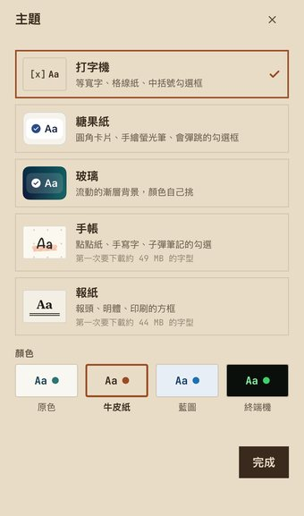
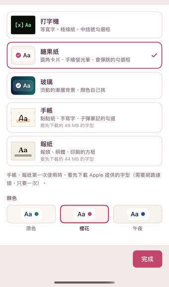
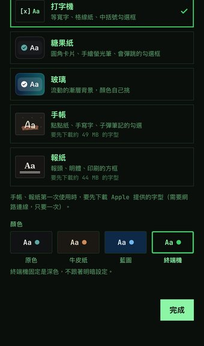
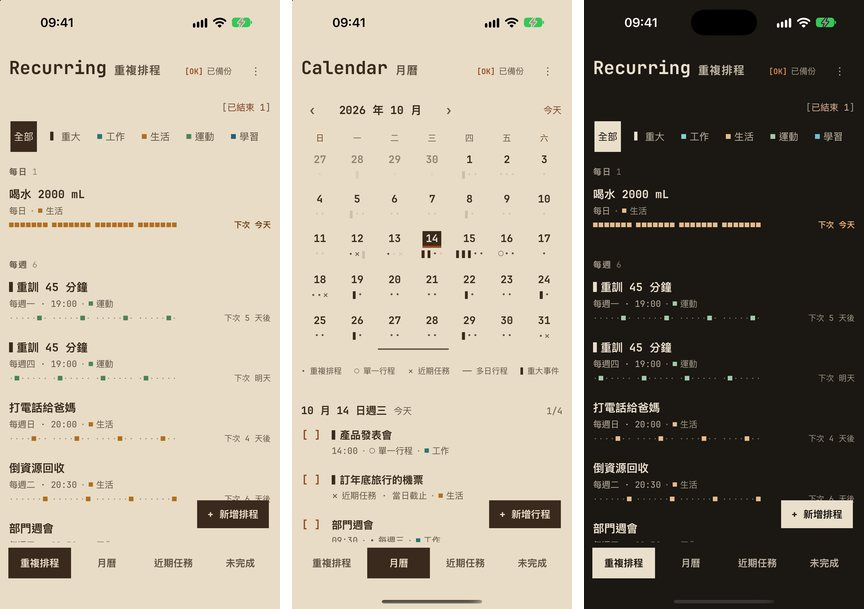
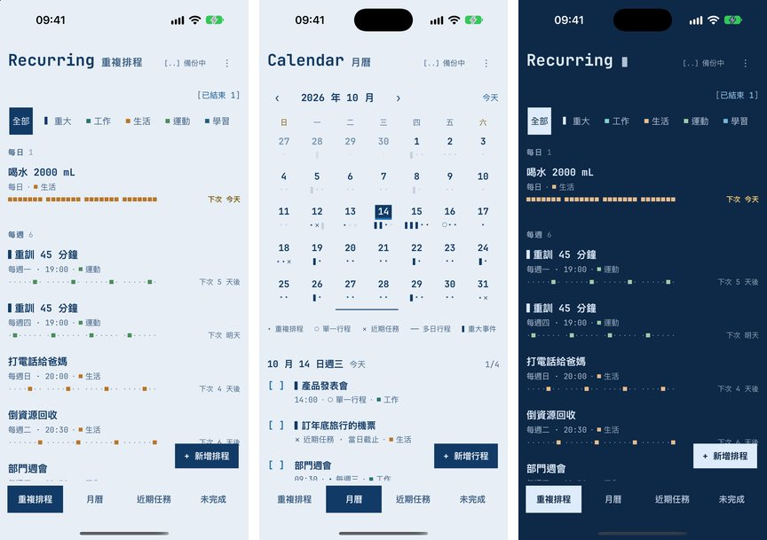
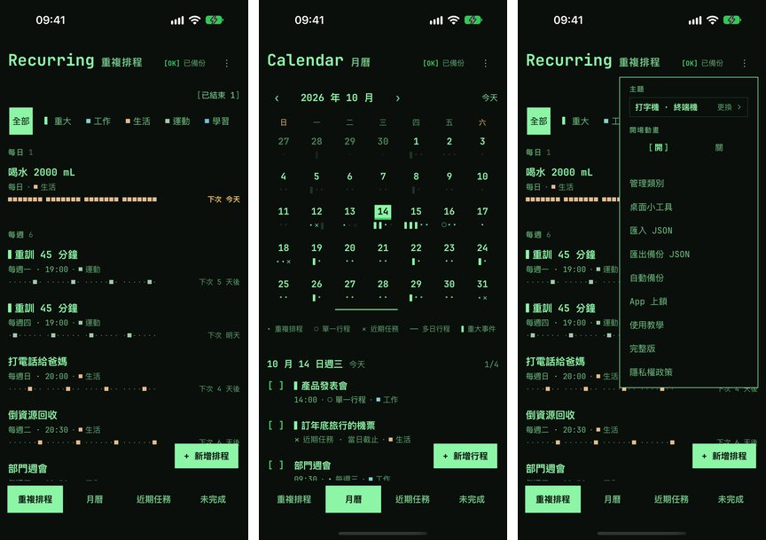
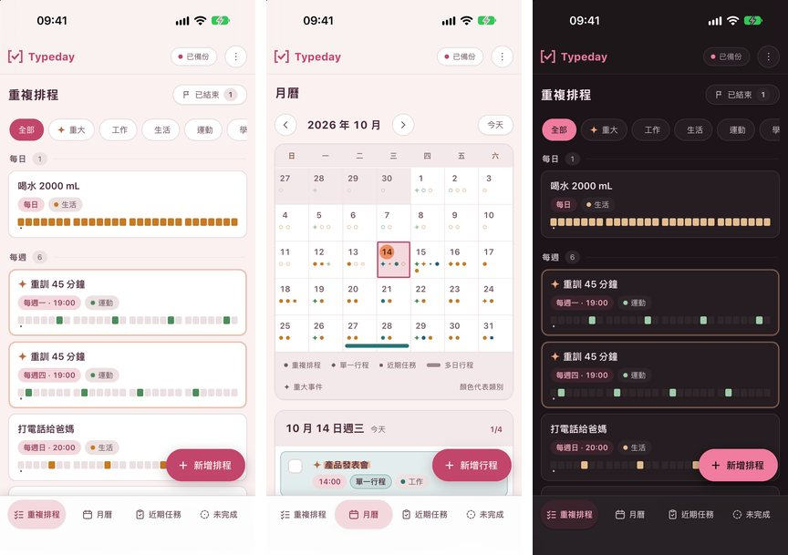
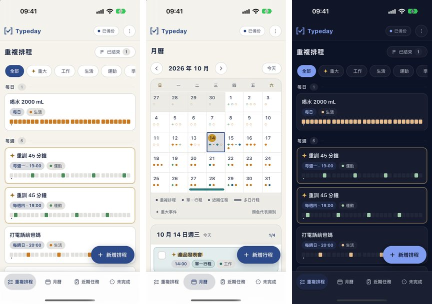

主題不變（版面、字、動畫都一樣），只換一組顏色。真的 App 在模擬器裡拍的（示範資料）；每組三張：重複排程、月曆、深色（終端機的第三張是選單）。



牛皮紙袋的暖棕色紙、深咖啡色字、鐵鏽紅標重點；深色像深焙咖啡。

淡藍色的製圖紙、深藍字；深色就是藍底白線的藍圖。

黑底綠字的舊電腦螢幕。只有深色：選了就固定深色，選單的「明暗」會藏起來。

淡粉色的底、白卡片、梅子色字、珊瑚色主色；深色是帶紫的深色。

淺色是象牙白配深藍；深色是深藍夜空配金色。
